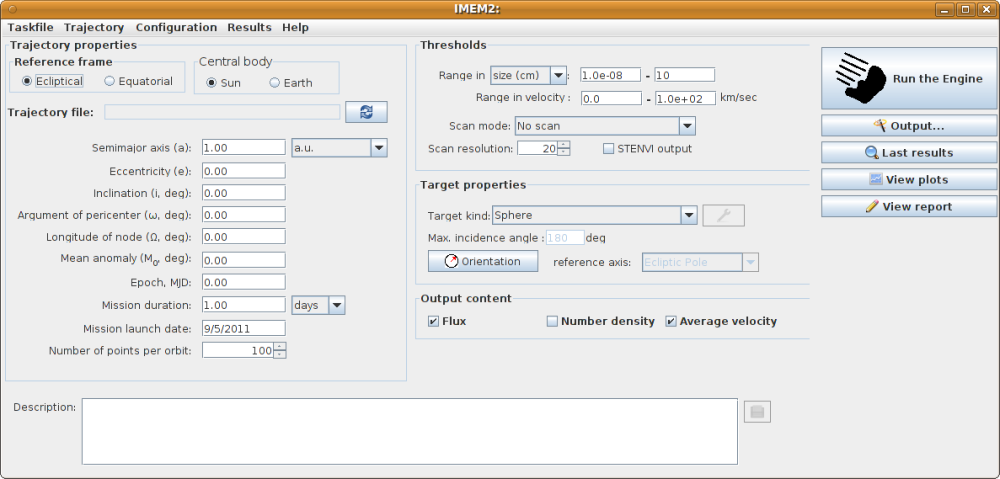
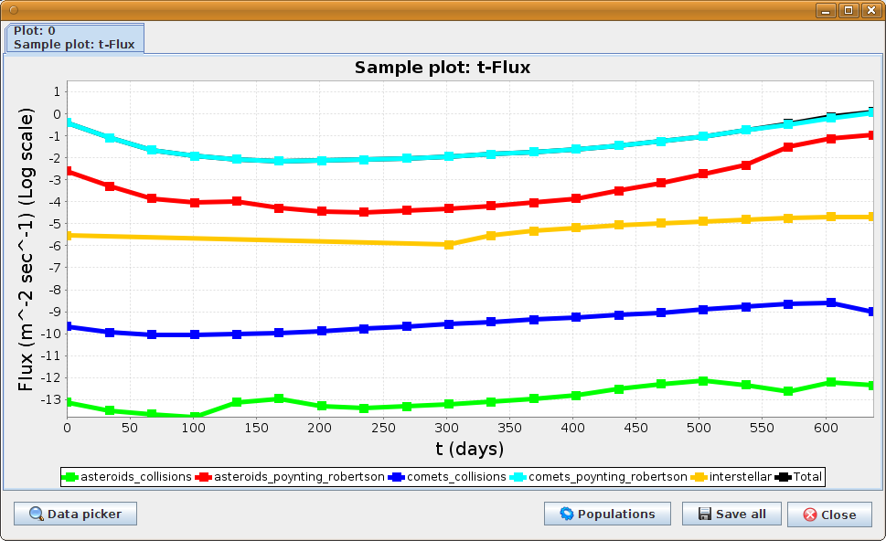
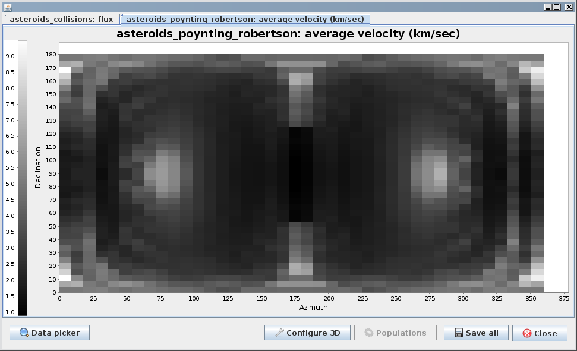

IMEM: ESA Interplanetary meteoroid model.
Introduction
IMEM-1.1 is a computer program to evaluate number
densities, fluxes and velocities of meteoroids in the interplanetary
space and near Earth. It was developed under ESA contract N 21928. The
abbreviation IMEM-1.1 stands for Interplanetary Meteoroid Engineering
Model (Version 1.1 stands for the updated version). It succeeds to the
earlier versions of meteoroid models programmed by Divine [2] for
NASA, Staubach for ESA (the DustMod program) and Dikarev also for ESA
(old IMEM, see [3]). It is related to METEM by currently used by NASA.
IMEM-1.1 can do a wide range of jobs. The program calculates fluxes,
average impact velocities and the number densities of the dust particles
subject to various selection effects due to the location and velocity of
spacecraft in the Solar system, the orientation and field of view of the
dust detector or another sensitive surface, and puts the results into an
ASCII file that other programs like gnuplot or Microsoft Excel can read
and process. IMEM-1.1 works with various meteoroid models which may
include several populations of particles on bound orbits about the Sun
having different densities, orbital and mass distributions and several
streams of the interstellar dust grains having different densities, mass
distributions, passing through the Solar system at various speeds and in
various directions. IMEM-1.1 is a portable code written in FORTRAN 90,
which is supported by the GNU Project and thus available on almost every
platform. IMEM-1.1 -GUI is a Java program that provides a user friendly
interface. It can be used to set most of IMEM-1.1 parameters, run
calculations and view results as a text or as a set of graphs. Being a
Java application, IMEM-1.1 -GUI can be used on every platform that has
Java. Model file provided with IMEM-1.1 contains data on meteoroids of
mass between $latex 10^{-18}$ and $latex 10^2$ grams on the orbits with
pericentric distances between 0.05 and 6 a.u., eccentricities between 0
and 1 and inclinations between 0 and 180 degrees.
How to get:
I have
no right to distribute the code, as it belongs to ESA. If you want to
get it, please send a message to Gerhard.Drolshagen at esa.int
Screenshots:


